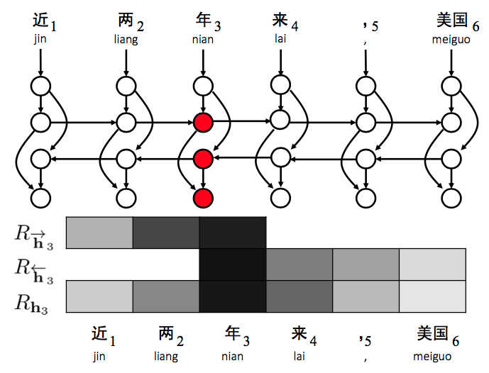
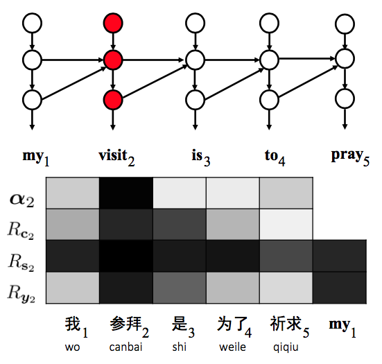
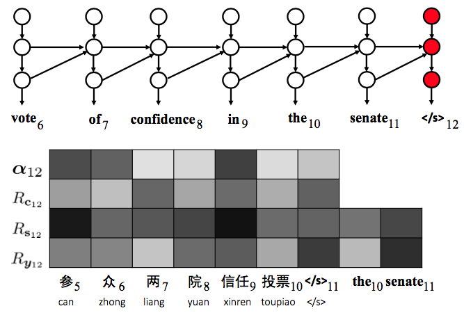
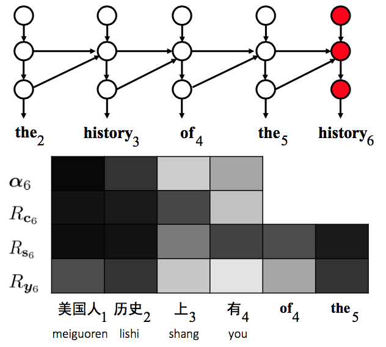
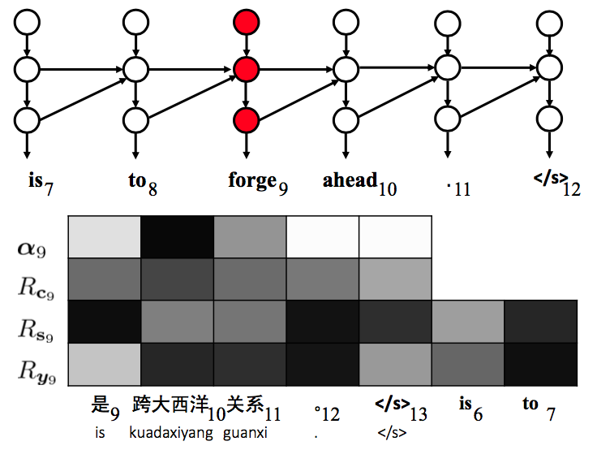
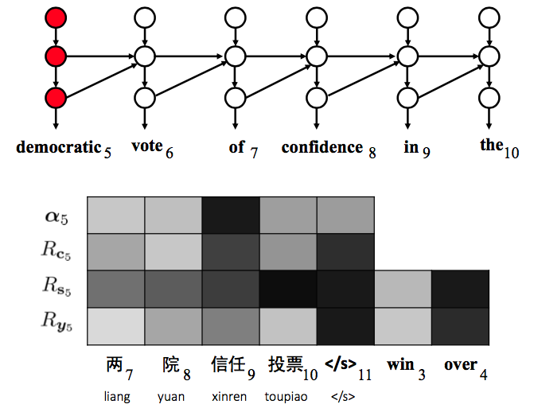

Visualizing and Understanding Neural Machine Translation
Updated:
This work [1] proposed to use layer-wise relevance propagation(LRP) [2] to compute the relevance A.K.A. the contribution of each contextual word to arbitrary hidden states.
the Relevance
Notations
- $\overrightarrow{h}_i$: the i-th source forward hidden state
- $\overleftarrow{h}_i$: the i-th source backward hidden state
- $\textbf{h}_i$: the i-th source hidden state
- $\vec{c}_j$: the j-th source context vector
- $\vec{s}_j$: the j -th target hidden state
- $\vec{y}_j$: the j-th target word embedding
Contextual Word Set
The contextual word set of $v$ $C(v)$ is a set of source and target contextual word vectors that influences the generation of $v$.
Neuron-level Relevance
The neuron-level relevance between the m-th neuron in a hidden state $v_m$ and the n-th neuron in a contextual word vector $u_n$ is denoted as $r_{u_n \leftarrow v_m}$, which satisfies
$$
v_m = \sum_{u\in C(v)}\sum^{N}_{n=1}r_{u_n \leftarrow v_m}
$$
Vector-level Relevance
The vector-level relevance between a hidden state $\textbf{v}$ and one contextual word vector $\textbf{u}$ quantifies the contribution of $\textbf{u}$ to the generation of $\textbf{v}$ which is calculated as
$$
R_{\textbf{u} \leftarrow \textbf{v}} = \sum^{M}_{m=1}\sum^{N}_{n=1}r_{u_n \leftarrow v_m}
$$
Relevance Vector
The relevance vector of a hidden state is a sequence of vector-level relevance of its contextual words.
LRP
Given a neuron $v$ and its incoming neurons $u \in IN(v)$, the weight ratio that measures the contribution of $u$ to $v$ is calculated as
$$
w_{\textbf{u} \rightarrow \textbf{v}} = \frac{W_{u,v}u}{ \sum_{u` \in IN(v)} W_{u`,v}u`}
$$
Analysis
Encoding
They observed that the direct preceding word “liang” (two) contributed more to forming the forward hidden state of “nian” (years).

Figure 1. Visualizing source hidden states for a source content word “nian” (years).
Decoding
They found that most contextual words received high values of relevance when generating target hidden states. This phenomenon has been frequently observed.

Figure 2. Visualizing target hidden states for a target content word “visit”.
Translation Error 1: Word Omission
Although the attention correctly identifies the source word, but the relevance of source context attaches more importance to the < EOS > token. This example demonstrated that only using attention matrices did not suffice to analyze the internal workings of NMT.

Figure 3. Analyzing translation error: word omission. The 6-th source word “zhong” is untranslated incorrectly.
Translation Error 2: Word Repetition
Word repetition not only results from wrong attention but also is significantly influenced by target side context.

Figure 4. Analyzing translation error: word repetition. The target word “history” occurs twice in the translation incorrectly.
Translation Error 3: Unrelated Words
They observed that unrelated words were more likely to occur if multiple contextual words had high values in the relevance vector of the target word being generated.

Figure 5. Analyzing translation error: unrelated words. The 9-th target word “forge” is totally unrelated to the source sentence.
Translation Error 4: Negation Reversion
One possible reason is that target context words take the lead in determining the next target word.
Figure 6. Analyzing translation error: negation. The 8-th negation source word “bu” (not) is not translated.
Translation Error 5: Extra Words
Target words contribute more to the target word generation.

Figure 7. Analyzing translation error: extra word. The 5-th target word “democratic” is an extra word.
Comments
- Since closer surrounding words have much more significant impact (Figure 1), does that mean encoding local words is enough?
- It is interesting to see that the target hidden state is relevent to almost all contextual words while right after going through next layer, the target word embedding is only relevent to the word having most attention (Figure 2).
- In Figure 3 and 4, it is hard to say the attention was applied to right position. This indicates attention mechanism still needs to improve.
- Results is not only influenced by source words but also largely controlled by translated target words. In Figure 6 even if the attention pointed to the right place, maybe not so perfectly, translated target words are still able to take over the control and generate wrong answer.
- Message conveyed in thoes figures is consist with the observation that there is kind of a conflict between AER and Translation Accuray.
References
[1] Yanzhuo Ding et al. Visualizing and Understanding Neural Machine Translation. ACL 2017
[2] Sebastian Bach et al. On pixel-wise explanations for non-linear classifier decisions by layer-wise relevance propagation . 2015